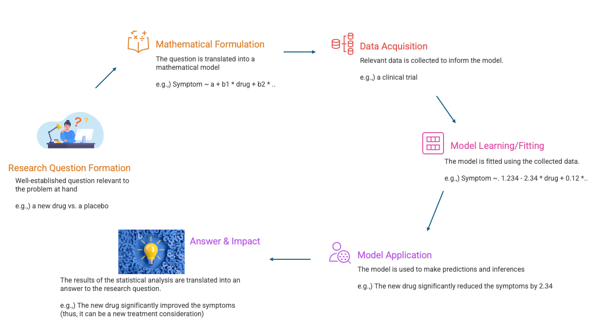
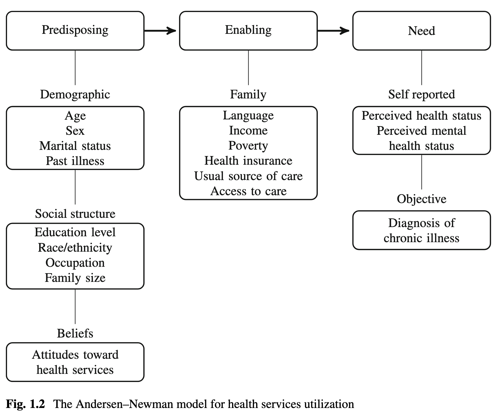
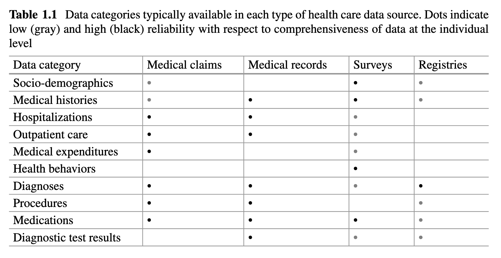

Lecture 1: Introduction to Class
MBA 642: Business Analytics in Healthcare Management (Spring 2026)
Welcome to MBA 642: Business Analytics in Healthcare Management!
Meet the prof
- Sangsuk Yoon, Ph.D.
- Associate professor of Marketing
- Office: MH 703
- Email: syoon1@udayton.edu
Learning Objectives
By the end of this session, you will be able to:
- Understand the role and importance of analytics in healthcare
- Differentiate between hypothesis-driven and predictive analytics approaches
- Identify major types of healthcare data sources
- Recognize strengths and limitations of different data types
- Apply the concept of “organic statistics” to health data analysis
Introduction: The Power of Health Data Analytics
Examples
Blood Pressure Study
- 400,000 Kaiser Permanente patients
- Taking hypertension medication
- Finding: Lower BP linked to higher mortality risk
- Challenges “more is better” assumption
Blood Sugar Study
- 33 million beneficiaries
- Hospital admissions for hypoglycemia increased over time
- Exceeded hyperglycemia admissions
- Questions aggressive diabetes treatment
These studies demonstrate how large database analyses can both raise questions and provide answers to improve health systems
The Healthcare Data Revolution
- Healthcare is undergoing massive digital transformation
- Electronic Health Records (EHRs) adoption accelerating
- Patient Protection and Affordable Care Act driving change
- Big Data enabling unprecedented learning about treatment effectiveness
- Population health improving through data-driven insights
Market Growth: Healthcare analytics market projected to grow from $23.51B (2020) to $96.90B (2030) at 15.3% CAGR
What is Statistics? Moving Beyond Recipes
Traditional View vs. Organic Statistics
Statistics is how we make sense of the world through data.
Statistics as Recipes ❌
- Collection of methods
- Pick the right recipe for data
- Focus on model fitting
- Software-driven approach
- Mechanical application
Organic Statistics ✅
- Understanding that grows naturally
- Know why AND how methods work
- Question → Data → Answer → Impact
- Logical progression of concepts
- Clear understanding of assumptions
The Statistical Analysis Pipeline

Statistics is not just about model fitting—it’s the entire pipeline linking questions to answers through data
Two Paradigms in Health Analytics
Paradigm 1: Hypothesis-Driven (Traditional)
Goal: Develop mechanistic explanations for observed variability
- Identify underlying structural phenomena (biological, clinical, socio-economic)
- Separate true mechanism from random noise
- Rest on conceptual/theoretical models
- Use statistical hypothesis testing
- Careful control of Type I error
- Make assumptions about data-generating mechanism
Critical: Avoid mistaking random noise for real mechanisms
The Andersen-Newman Model
A conceptual framework for health services utilization:

Conceptual models guide which factors to include/exclude in statistical models.
- e.g.,) In examining hypotheses concerning the link between physical activity and health care costs,
- we would consider including predisposing factors (age, gender),
- but should not include mediating factors (such as BMI or self-reported health status: Need factors) in the statistical model.
Paradigm 2: Predictive Analytics
Goal: Learn patterns that optimize prediction accuracy
- Focus on prediction, not mechanism
- Minimize distance between observed and predicted outcomes
- Often uses algorithmic “black box” methods
- May not be mathematically describable
- Less structured, fewer assumptions
- Does not support causal inference
Cannot identify specific factors for intervention, even with superior predictive performance
Case Study: Heritage Provider Network Prize
Objective: Predict hospital days in next year using 3 years of prior data
- Started April 2011, $3M+ in prizes
- 16,000+ data scientists, 25,000+ models submitted
- Top solutions used ensemble methods combining multiple algorithms
- Result: Excellent prediction, but not interpretable
- Could identify WHO would be hospitalized
- Could NOT explain WHY or guide interventions
Which Approach to Choose?
Hypothesis-Driven When:
- Scientific question is specific
- Investigating cause/mechanism
- Need to understand “why”
- Results inform interventions
- Target population well-defined
Predictive When:
- Primary goal is forecasting
- Action based on risk scores
- Mechanism less important
- Early detection critical
- Resource allocation decisions
Answer depends on: Objective of analysis and how results will be used in practice
Types of Healthcare Data
Overview: Administrative vs. Non-Administrative
Administrative Data
- Collected for billing/operations
- Medical claims
- Electronic medical records
- Not designed for research
- Objective snapshot of care
- Many analytical challenges
Non-Administrative Data
- Collected for research/surveillance
- Health surveys
- Disease registries
- Purpose-built for analysis
- Still have limitations
- Selection bias concerns
Data Categories by Source

Data Source 1: Medical Claims
What Are Medical Claims?
Definition: Structured forms documenting billable interactions between insured patients and healthcare system
- Purpose: Generate payment from payer for services
- Include diagnosis codes (ICD-9/ICD-10)
- Include procedure codes (CPT, HCPCS)
- Include prescribed medications
- Include medical care costs
- Created by trained claims coders from medical records
Claims Coding Systems
Diagnosis Codes
- ICD-9 → ICD-10 (2015)
- Expanded from ~13,000 to 68,000+ codes
- Example: E11.65 = Type 2 diabetes with hyperglycemia
Procedure Codes
- ICD-10 for inpatient procedures
- CPT for outpatient services
- HCPCS includes non-physician services
- Ambulance rides
- Medical equipment
- Prescription drugs
Claims Data: Strengths and Limitations
Strengths:
- Rich information on healthcare utilization
- Objective documentation of care delivered
- Large sample sizes available
- Longitudinal tracking (while enrolled)
- Multiple dimensions: diagnoses, procedures, medications, costs
- Research value despite not designed for research
Limitations:
- Only insured patients represented
- Only covered services included
- Incomplete information (e.g., no OTC drugs)
- Missing data when coverage lapses or patient switches payers
- Limited socio-demographics at individual level
- No health status measurements or test results
- Variable coding practices across coders/facilities
- Billing incentives may skew documentation
Accessing Claims Data
Challenges:
- Requires formal proposal
- Often requires funding
- Data security protocols
- Limited access without collaboration
Options:
- Medicare SynPUFs (synthetic public files)
- Collaboration with payers
- Commercial data products (licensed)
- Integrated health systems
Data Source 2: Electronic Medical Records
What Are Medical Records?
Definition: Comprehensive electronic clinical data obtained at point of care
- Used for diagnosis and treatment
- Include all patients (not just insured)
- Contain structured data (like claims)
- Plus unstructured data:
- Physician notes
- Imaging reports
- Vital sign measurements
- Diagnostic test results
Medical Records: Unique Advantages
- Complete patient coverage (insured and uninsured)
- Health status measurements (BP, lab values, etc.)
- Diagnostic test results enable studies impossible with claims alone
- Unstructured data provide rich clinical context
- Real-time prediction potential for alerts and risk stratification
- Process of care understanding
- Effectiveness research in real-world settings
Example: Kaiser blood pressure study required actual BP measurements, not just diagnosis codes
Medical Records: Key Challenges
- Phenotyping: Identifying diagnoses/outcomes requires algorithms across multiple data streams
- Informative missingness: Sicker patients have more data recorded
- No statistical design: Real-time surveillance, not planned data collection
- Proprietary nature: Generally not accessible to outside researchers
- HIPAA protection: Highly sensitive, tightly controlled access
- Variable quality: Depends on clinical documentation practices
Accessing Medical Records
Public/Curated Sources:
- Comprehensive Hospital Abstract Reporting System
- National Inpatient Sample
- SAMHSA facility data
Commercial Collections:
- Available with research proposal and fees
- Variable access procedures and costs
- Quality differs across products
Data Source 3: Health Surveys
Major National Health Surveys
Three key publicly available surveys:
- NHIS - National Health Interview Survey
- NHANES - National Health and Nutrition Examination Survey
- MEPS - Medical Expenditure Panel Survey
All three use complex sampling designs with stratification, clustering, and weights for population representation
NHIS: National Health Interview Survey
Characteristics:
- Nation’s largest in-person household survey
- Conducted annually since 1957
- Cross-sectional design
- Different sample each year
- Conducted by Census Bureau for NCHS
Content:
- Medical conditions
- Health insurance
- Doctor visits
- Health behaviors
- Socio-demographics
Uses: Monitor chronic disease burden, track access to care, measure progress toward national health objectives
NHANES: Nutrition Examination Survey
Goes Beyond NHIS:
- Interview + physical exam + blood tests
- Objective health measurements
- More complex/costly logistics
Key Measurements:
- Blood pressure
- Body mass index
- Hemoglobin A1c
- Cholesterol levels
- Lead levels
Major Impacts:
- Created growth charts for children
- Monitors obesity prevalence
- Estimates undiagnosed diabetes
- Informed lead reduction policy
- Guides hypertension/cholesterol programs
MEPS: Medical Expenditure Panel Survey
Unique Features:
- Subsample of NHIS households
- Longitudinal: 5 interviews over 2 years
- Detailed utilization and expenditure data
- Links to medical providers and health records
Rich Content:
- NHIS variables (demographics, behaviors)
- Detailed insurance information
- Inpatient/outpatient/Rx utilization
- Actual expenditures from providers
Course Note: Many examples in our class examples use MEPS data
Survey Data: Complex Sampling Design
Why not simple random sampling?
Techniques Used:
- Stratification: Control proportions sampled within subgroups
- Clustering: Reduce survey administration costs
- Weighting: Each observation represents multiple people
Implications:
- Must account for design in analysis
- Use survey weights
- Software packages (R, Stata) have survey analysis commands
- Ignore at your peril!
Survey Data: Potential Biases
- Non-response bias: Certain groups less likely to participate
- Recall bias: Inaccurate memory of past events
- Social desirability bias: Respondents give “acceptable” answers
- Selection bias: Sample may not represent target population
Mitigation requires: Extensive instrument development, calibration, and careful consideration of implementation mode
Survey Data: Unique Value
Information difficult/impossible to get from administrative data:
- Socio-demographic characteristics
- Health behaviors (smoking, exercise, diet)
- Individual perceptions and preferences
- Patient satisfaction
- Access barriers
- Social determinants of health
Data Source 4: Disease Registries
What Is a Disease Registry?
Definition: Non-administrative data collected for population surveillance of specific condition(s)
- Clearly specified objective
- Variables designed to address objective
- Infrastructure for systematic data collection
- Not random samples (census or opt-in)
- Purpose-built for surveillance
Examples: Cancer, end-stage renal disease, Alzheimer’s disease, Down syndrome
Case Study: SEER Cancer Registry
Surveillance, Epidemiology, and End Results Program
Coverage:
- Complete census in specific catchment areas
- All diagnosed cancer cases
- Hospital-based cancer registrars abstract data
Data Elements:
- Demographics
- Census-tract socioeconomics
- Disease characteristics
- First course of treatment
- Survival and cause of death
SEER Registry: Major Insights
Documented important trends:
- Dramatic ↑ prostate cancer incidence (PSA testing)
- ↓ Cervical cancer incidence (Pap smears)
- Persistent ↑ melanoma incidence (still not fully understood)
Critical Uses:
- Setting cancer prevention priorities
- Assessing progress toward health goals
- Allocating control program resources
SEER Quality Assurance
Reliability Studies:
- Multiple coders review same records
- Assess consistency across registry sites
- Measure agreement in coding
Case-Finding Audits:
- Ensure all eligible cases identified
- Verify accuracy of incidence rates
- Validate completeness
Quality assurance processes are critical for registry data validity
Registry Limitations
- Representativeness: Opt-in registries subject to selection bias; even census registries limited to catchment areas
- Detection bias: Changes in diagnostic methods affect apparent incidence
- Definition changes: Example - 2017 hypertension threshold change (140→130 mm Hg)
- Limited scope: Focus on specific objectives may miss important variables
- Data quality: Depends on training and consistency of abstractors
SEER-Medicare Linkage
Combining Registry + Claims Data
- SEER provides diagnosis information
- Medicare claims add treatment patterns and outcomes
- Available for Medicare beneficiaries only
- Enables studies of post-diagnosis care
Result: Informed numerous investigations of cancer treatment patterns and outcomes
Data Quality and Practical Considerations
The Hypertension Prevalence Example
Question: What is the prevalence of hypertension in the population?
Multiple Data Sources:
- Survey self-report (diagnosed hypertension)
- Medical claims (diagnosis codes)
- Medical records (BP measurements)
- Pharmacy records (medications)
Finding: Each source showed ~30% prevalence, BUT substantial non-overlap in identified cases
Understand which individuals are represented in each data source and interpret results accordingly
Critical Data Quality Lessons
- No single data source is complete
- Understand the data-generating process for each source
- Recognize over-, non-, or under-represented groups
- Adjust or interpret analyses in light of limitations
- Multiple sources may provide different perspectives on same question
- Triangulation across data sources strengthens findings
Matching Questions to Data Sources
Key Principle: Match research question to data resource most likely to provide valid answer
| Research Need | Best Data Source |
|---|---|
| Health status measurements | Medical records, NHANES |
| Healthcare costs | Claims, MEPS |
| Health behaviors | Surveys |
| Disease incidence | Registries |
| Treatment patterns | Claims, Records |
| Population prevalence | Surveys, Registries |
Key Datasets We’ll Use
Primary Dataset: MEPS (Medical Expenditure Panel Survey)
- Rich environment for exploring health services questions
- Demonstrates specialized methods for observational data
- Complex survey design (addressed in Chapter 9)
Also: NHIS, NHANES, SEER, Medicare claims
Key Takeaways
Summary: Core Concepts
Healthcare analytics is transforming the industry through data-driven decision making
Two analytical paradigms serve different purposes:
- Hypothesis-driven for understanding mechanism
- Predictive for forecasting and risk stratification
Four major data sources each with unique strengths and limitations:
- Claims, Records, Surveys, Registries
Data quality matters: Understand data-generating process
Match question to data source for valid inference
Next Class
Next Session: Week 2: Basic Statistical Concepts
- Review of probability and distributions
- Hypothesis testing framework
- P-values and confidence intervals
Preparation: PLease review Chapter 2 of the Statistics for Health Data Science textbook before next class.